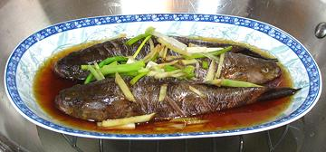

This is the largest of the Gobies, reaching 26 inches, but most commonly no more than 12 inches. It is widespread, found in fresh and brackish waters throughout Southeast Asia, including Indonesia and the Philippines. It is a very lazy ambush hunter, why it is called a "Sleeper" - it just gulps down food that swims by its nose. It is much sought as an outstanding eating fish, and is also popular in aquariums.
This fish is caught wild and farmed. It is a problem fish for farming, as it insists on live food, but the demand is high, so it is increasingly farmed. The photo specimen was 7-3/4 inches long, weighed 4-1/4 ounces, and was farm raised in Vietnam. This fish is IUCN Red List rated LC (Least Concern).
More on Gobys.
 This fish is cooked, whole or head-off, by either steaming or deep frying. The photo to the left shows 3 7-3/4 inch fish prepared for steaming in accordance with our recipe Steaming Fish Chinese Style. This recipe works very well - but go easy on the soy sauce so you don't mask the delicate taste of the flesh. Keep the steaming time down to 9 minutes after covering for 7 inch fish, a bit longer for larger fish.
It is best to eat these fish with pointy chop sticks as they give you the maximum precision when dismantling the fish on your plate. There will be some tiny bones to deal with.
Scales: This fish is completely covered by moderate size scales, which take only moderate energy to scrape off. It's hard to tell where there are still scales. Some don't come off with regular scraping and need to be shaved off with the sharp edge of the knife. I always make a last pass with a thumbnail, which will detect any remaining scales and scrape them off.
Cleaning: Nothing unusual here except access is a bit tight. User your long nose pliers to pull remaining things out. Be sure to pull the gills if you will be cooking the fish head-on. I cut off the pelvic (bottom) fins, which will be in the way. The rest are very easy to pull out after cooking.
Fillet: I have found no recipe that calls for filleting this fish. I suppose if you had one over 15 inches long you might want to do that, but we don't get them that size around here.
Skin: The skin does not have a strong or "off" flavor and is always left on. It has a little shrink, but is very thin. Cutting three diagonal slashes on each side of the fish will keep it looking good, and allow good penetration of sauces.
Stock: Since this fish is usually cooked whole, there is no opportunity for making stock.
Yield: I don't have a precise yield, as it's not easy to get with a fish you cook whole, but this fish is pretty meaty, so it's probably around 50%.
sf_gobymz 171111 - www.clovegarden.com